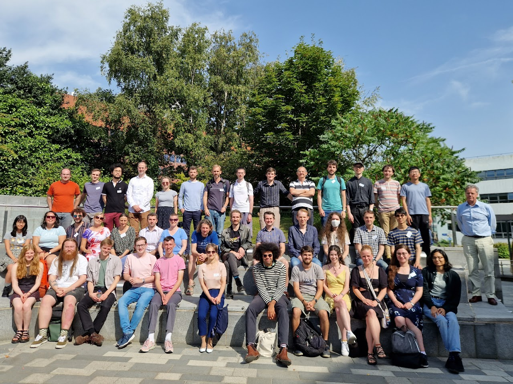

Conferences
Here is a list of conferences I've attended, with corresponding conference photos.
YaMCATS 34, Sheffield (2024)
TTT118, Sheffield (2024)
36th British Topology Meeting, Sheffield (2023)
ECSTASy, Southampton (2023)
A Panorama of Homotopy Theory (in Honour of Mike Hopkins), Oxford (2023)